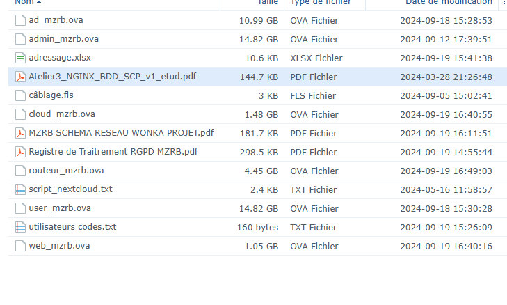

PROJET INFRASTRUCTURE SECURISEE (BTS SIO 1 SISR)
Enseignant : Mr. Sebastien Godefin
Dans le cadre du projet d'infrastructure, nous avons adopté une approche méthodique et structurée, en avançant étape par étape pour mener à bien les différentes tâches.
La première étape a consisté à concevoir un schéma réseau détaillé représentant l'ensemble des éléments qui composent le projet, notamment les machines, les serveurs et les routeurs.
Le projet se compose de deux routeurs, appelés « gatewayzouaoui », et d'un serveur Web sous WordPress fonctionnant sur un système Linux avec Nginx et PHP, nommé « webzouaoui ».
Ce serveur est placé dans la DMZ (zone démilitarisée) pour assurer une séparation sécurisée des réseaux internes et externes.
Concernant le réseau local (LAN), il comprend trois serveurs :
- Serveur Admin sous Windows 11, nommé « admzouaoui ».
- Serveur de Domaine sous Linux et Samba, nommé « domzouaoui ».
- Serveur de Base de données sous Linux et MariaDB, nommé « dbzouaoui ».
Une fois le schéma réseau établi, nous avons également élaboré une table de routage spécifique, en attribuant des adresses et
des règles pour chaque composant du réseau, afin d'assurer une communication fluide et sécure entre les différentes machines et serveurs.
Après la création de cette architecture, nous avons procédé à la configuration, à l'installation et à la mise en place des différentes machines et serveurs.
Cette phase a impliqué la configuration réseau, l'installation des systèmes d'exploitation appropriés et l'intégration des services nécessaires pour assurer le bon fonctionnement de l'infrastructure.
PROJET HAUTE DISPONIBILITE (BTS SIO 2 SISR)
Enseignant : Mr. Sebastien Godefin
La société COM'NPY a pour objectif de déployer une plateforme WordPress hautement disponible afin d’intégrer des SLA de qualité pour ses clients.
Le projet consiste en la mise en place d’une solution complète de haute disponibilité.
L’activité principale est de préparer une plateforme initiale qui servira de base pour les différents nœuds du cluster. Ce travail se concentre sur un serveur maître, destiné à être cloné ultérieurement.
Pour ce faire, il est nécessaire d’installer et de configurer un serveur Debian comprenant un serveur web NGINX, un SGBD MariaDB, PHP et WordPress.
Des outils d’administration comme ssh et phpMyAdmin doivent également être intégrés.
Une fois la configuration terminée, des tests devront être effectués pour garantir l’accessibilité des applications phpMyAdmin et WordPress via l’adresse IP et le nom d’hôte du serveur maître.
Résultat final :
PPROJET «WONKA» (BTS SIO 2 SISR)
Enseignant : Mr. Vincent Dupoy
Objectif du Projet
Le projet se déroule en équipe de 2, tirée aléatoirement, et se compose de 8 heures de travail en cours, complétées par des temps entre les séances. Le travail s’effectue en deux séances d’AP et une recette à la 3ème séance.
L'objectif est de proposer une solution technique qui répond aux besoins du client tout en assurant l’ergonomie, la disponibilité, l’intégrité, et la confidentialité des données.
Les technologies et choix sont libres, mais la maquette doit d’abord être réalisée en schéma, puis en VM (Machines Virtuelles). La recette du projet aura lieu en cours.
Pour ce projet, nous avons débuté par la réalisation d'un schéma réseau basé sur le cahier des charges, afin de clarifier et structurer les différentes exigences.
Livrables
Les livrables attendus pour ce projet sont les suivants :
Un schéma réseau professionnel correspondant à la maquette, ainsi qu'une maquette fonctionnelle en VM (les noms des services et VM doivent comporter les initiales des membres de l’équipe).
Démarche
La démarche suivie pour la réalisation du projet doit inclure les étapes suivantes :
Analyse du cahier des charges fourni par le client.
Prototypage avec la création d’un schéma réseau pour proposer des technologies adaptées.
Documentation : demander un espace de travail privé sur le NAS (incluant le schéma, la liste des tâches et le registre de traitement) et utiliser HumHub pour la discussion en équipe.
Planification : répartition des tâches et suivi avec KANBOARD.
Développement : réalisation de la maquette VM.
Tests pour valider la solution.
Réalisation du registre de traitement.
Finalisation du schéma réseau au format A4 PDF.
Enfin, réalisation de la recette du projet en cours.
Contexte Client
L’entreprise WONKA, fabricant de chocolat, a fait appel à vous pour concevoir et aménager sa nouvelle filiale en France. Actuellement, les locaux sont petits et n’accueillent que 4 personnes.
Voici les besoins exprimés par le client :
Cahier des charges du client
Willy Wonka, PDG de l’entreprise, décrit ses besoins dans ce cahier des charges :
1 - Un annuaire d’utilisateurs
Le client souhaite gérer plusieurs utilisateurs facilement. Actuellement, il y a 4 utilisateurs : Willy Wonka (PDG), Charlie Bucket (technicien informatique), Augustus Gloop et Violette Beauregard (tous deux dans l’unité fabrication). Ces utilisateurs doivent pouvoir se connecter à n’importe quel PC de l’entreprise et, de préférence, n’avoir qu'un seul identifiant/mot de passe pour tous les outils utilisés.
2 - Du stockage sécurisé
Le client a besoin de stocker des documents sensibles. Certains doivent être accessibles à tous, d'autres doivent être limités à certains utilisateurs (par exemple, un document comme “recetteChocolatsecrete.pdf” doit être accessible uniquement par l’unité fabrication). La sécurité du stockage est une priorité pour protéger les secrets industriels et éviter les vols (comme celui des disques durs contenant des recettes). De plus, en cas de sinistre (incendie, panne), la récupération des fichiers doit être possible sous 24 heures. Le stockage doit être ergonomique et facile à utiliser, sans avoir besoin d'expertise informatique.
3 - Un intranet
Le client a besoin d’un site web interne, une page simple avec le logo de l'entreprise et des liens vers les services (stockage, schéma réseau, etc.). Ce site doit être ergonomique, facilement modifiable, et accessible uniquement aux employés pour le moment. À l'avenir, il pourrait devenir un site public, mais pour cela, une bonne sécurité et disponibilité sont nécessaires.
4 - Un poste client pour le technicien informatique
Charlie Bucket, le technicien informatique, a besoin d'un PC pour gérer plusieurs aspects du système, notamment :
Accéder au stockage, consulter l’état de santé des services et serveurs via un tableau de bord, créer des utilisateurs, publier des pages web sur l'intranet, gérer les serveurs et réinstaller facilement des services ou des sauvegardes. Tous ces besoins doivent être simples à utiliser, ergonomiques et accessibles à distance, car les serveurs sont situés dans une salle sécurisée au sous-sol.
5 - Registre de traitement
Le client dispose d'un fichier contenant des données personnelles (“WONKA_liste_des_employees.ods”) pour la gestion des bulletins de salaire. Le technicien informatique, en tant que DPO (délégué à la protection des données), doit mettre en place une première version du registre de traitement RGPD pour se conformer aux exigences de la réglementation sur la protection des données personnelles.

Voici la première version du registre de traitement RGPD, élaborée pour se conformer aux exigences de la réglementation relative à la protection des données personnelles, disponible ci-dessous.
PPROJET «Beròi Bòrda» (BTS SIO 2 SISR)
Enseignant : Mr. Vincent Dupoy
L’entreprise Beròi Bòrda, spécialisée dans la conception de spécialités culinaires à base de canard, possède deux sites distincts :
PAU, où se situe le siège social, et NAY, l’unité de fabrication.
Dans le cadre de ce projet, nous avons préparé un schéma réseau détaillé afin de répondre aux besoins du client.
Ce schéma représente l’architecture réseau de l’entreprise Beròi Bòrda, incluant les différentes connexions entre les sites de PAU et NAY, ainsi que l’interconnexion avec l’internet et les services internes.
Il prend en compte les éléments clés de sécurité, de disponibilité et de confidentialité, et propose des solutions adaptées à l’infrastructure de l’entreprise.
Ces deux sites sont séparés par 21 km et chacun dispose de sa propre connexion internet avec une box et une IP WAN publique.
L’entreprise vous charge de la mise en place de son réseau et de ses services pour garantir la sécurité, la disponibilité et la confidentialité de ses données.
Le projet de mise en place de l'infrastructure se divise en plusieurs volets. Tout d'abord, le site de PAU nécessite la gestion de deux postes clients sous Windows.
N’étant pas une grande entreprise, il n'y a pas besoin d’annuaire, seulement des utilisateurs locaux.
Cependant, deux scripts PowerShell doivent être développés.
Le premier script servira à automatiser la création de comptes utilisateurs à partir d’un fichier contenant des noms et prénoms, et le second pour l'installation silencieuse d'applications à partir de fichiers .msi.
Le site de PAU aura également un service de messagerie instantanée pour les échanges non essentiels entre les deux bureaux, ainsi qu'un serveur de téléphonie pour permettre les communications entre les postes.
Ce serveur devra inclure un mécanisme de sauvegarde automatique des configurations chaque nuit pour assurer la sécurité des données.
Le site web de PAU sera une boutique en ligne sous WordPress, protégée dans une DMZ.
Il sera administré depuis la DMZ et devra afficher un taux de disponibilité de 99 % car il génère 80 % du chiffre d’affaires de l’entreprise.
En cas de panne, il sera essentiel de ne pas perdre les données. Un pare-feu sera installé pour protéger le réseau, avec des règles strictes de filtrage du trafic entre le WAN, la DMZ et le LAN.
Pour le site de NAY, il est prévu un poste client sous Ubuntu destiné à piloter les machines de la ligne de production.
Ce poste devra également pouvoir accéder à l'intranet interne, lequel affichera en temps réel les informations issues de la base de données de production et de la table des stocks.
Cet intranet sera uniquement accessible depuis l’intérieur de l’unité de fabrication et sera supervisé.
Le site de NAY disposera également d’un service de NAS, qui pourrait être basé sur une solution open source comme FreeNAS ou TrueNAS.
Le service NAS permettra de stocker et de sauvegarder les données, accessible uniquement depuis le réseau interne de NAY.
Enfin, un service de supervision sera mis en place pour surveiller le NAS, l’intranet et le pare-feu du site.